Introduction to the B-form
This is a quick introduction to the B-form, and to commands in Curve Fitting Toolbox™ that work on the B-form.
Contents
Introduction
In Curve Fitting Toolbox, a piecewise polynomial, or pp, function in B-form is often called a spline.
The B-form of a (univariate) pp is specified by its (nondecreasing) knot sequence t and by its B-spline coefficient sequence a.
Given the knot sequence and coefficient sequence of a pp, the command spmak returns the corresponding B-form, for use in commands such as fnval (evaluate a function), fnplt (plot a function), fnder (differentiate a function), and other related commands.
The resulting spline is of order k := length(t) - size(a,2). This means that all its polynomial pieces have degree < k.
To say that a spline s has knots t and coefficients a means that
n
s(x) := sum B_{j,k}(x) * a(:,j),
j=1where B_(j,k) = B( . | t_j, ..., t_{j+k}) is the j-th B-spline of order k for the given knot sequence t, i.e., the B-spline with knots t_j, ..., t_{j+k}. For example,
t = [.1 .4 .5 .8 .9]; a = 1; fnplt(spmak(t,a),2.5); tmp = repmat(t,3,1); ty = repmat(.1*[1;-1;NaN],1,5); hold on plot(tmp(:),ty(:)) text(.65,.5,'B( \cdot | .1, .4, .5, .8, .9)','FontSize',12) text(.05,1.,'s(x) = \Sigma_j B( x | t_j , \ldots, t_{j+k} ) a(:,j)', ... 'FontSize',16,'Color','r') axis([0 1 -.2 1.2]) title('A B-spline of Order 4') hold off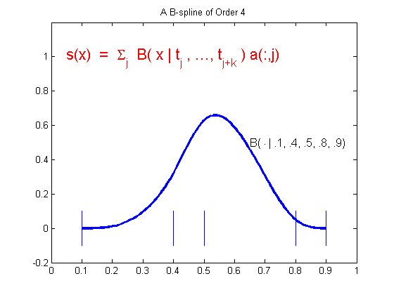
The Local Partition of Unity
The value of the spline
s(x) = sum B_{j,k}(x) a(:,j)
jat any x in the knot interval [t_i .. t_{i+1}] is a convex combination of the k coefficients a(:.i-k+1), ..., a(:,i) since, on that interval, only the k B-splines B_{i-k+1,k}, ..., B_{i,k} are nonzero, and they are nonnegative there and sum to 1, as is illustrated in the next figure.
This is often summarized by saying that the B-splines provide a local (nonnegative) partition of unity.
k = 3; n = 3; t = [1 1.7 3.2 4.2 4.8 6]; tt = (10:60)/10; vals = fnval(spmak(t,eye(k)),tt); plot(tt.',vals.'); hold on ind = find(tt>=t(3)&tt<=t(4)); plot(tt(ind).',vals(:,ind).','LineWidth',3) plot(t([3 4]),[1 1],'k','LineWidth',3) ty = repmat(.1*[1;-1;NaN],1,6); plot([0 0 -.2 0 0 -.2 0 0],[-.5 0 0 0 1 1 1 1.5],'k') text(-.5,0,'0','FontSize',12) text(-.5,1,'1','FontSize',12) tmp = repmat(t,3,1); plot(tmp(:),ty(:),'k'); yd = -.25; text(t(1),yd,'t_{i-2}','FontSize',12); text(t(3),yd,'t_i','FontSize',12); text(t(4),yd,'t_{i+1}','FontSize',12); text(1.8,.5,'B_{i-2,3}','FontSize',12); text(5,.45,'B_{i,3}','FontSize',12); axis([-.5 7 -.5 1.5]) title('B-splines Form a Local Partition of Unity') axis off hold off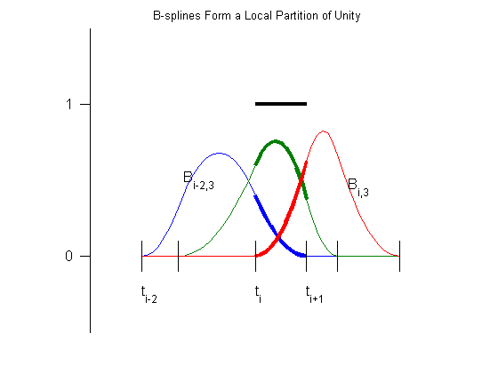
The Convex Hull Property and the Control Polygon
When the coefficients are points in the plane and, correspondingly, the spline
s(x) = sum B_{j,k}(x) a(:,j)
jtraces out a curve, this means that the curve piece
{ s(x) : t_i <= x <= t_{i+1} }highlighted in the figure below by a larger LineWidth, lies in the convex hull, shown in yellow in the figure below, of the k points a(:,i-k+1), ... a(:,i).
t = 1:9; c = [2 1.4;1 .5; 2 -.4; 5 1.4; 6 .5; 5 -.4].'; sp = spmak(t,c); fill(c(1,3:5),c(2,3:5),'y','EdgeColor','y'); hold on fnplt(sp,t([3 7]),1.5) fnplt(sp,t([5 6]),3) plot(c(1,:),c(2,:),':ok') text(2,-.55,'a(:,i-2)','FontSize',12) text(5,1.6,'a(:,i-1)','FontSize',12) text(6.1,.5,'a(:,i)','FontSize',12) title('The Convex-Hull Property') axis([.5 7 -.8 1.8]) axis off hold off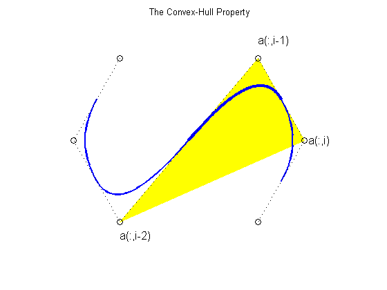
For a quadratic spline (i.e., k = 3), as shown here, it even means that the curve is tangent to the control polygon (shown as dotted lines). This is the broken line that connects the coefficients, which are called control points in this connection (shown here as open circles).
The Control Polygon for Scalar-Valued Splines
We can think of the graph of the scalar-valued spline
s = sum B_{j,k}*a(j)
jas the curve x |--> (x,s(x)). Since
x = sum B_{j,k}(x) t^*_j
jfor x in the interval [t_k .. t_{n+1}], where
t^*_i := (t_{i+1} + ... + t_{i+k-1})/(k-1) for i = 1:nare the knot averages obtainable using the aveknt command, the control polygon for a scalar-valued spline is the broken line with vertices (t^*_i, a(i)), i=1:n.
The example below shows a cubic spline (k = 4), with 4-fold end knots, hence
t^*_1 = t_1 and t^*_n = t_{n+k}.t = [0 .2 .35 .47 .61 .84 1]*(2*pi); s = t([1 3 4 5 7]); knots = augknt(s,4); sp = spapi(knots,t,sin(t)+1.8); fnplt(sp,2); hold on c = fnbrk(sp,'c'); ts = aveknt(knots,4); plot(ts,c,':ok'); tt = [s;s;NaN(size(s))]; ty = repmat(.25*[-1;1;NaN], size(s)); plot(tt(:),ty(:),'r') plot(ts(1,:),zeros(size(ts)),'*') text(knots(5),-.5,'t_5','FontSize',12) text(ts(2),-.45,'t^*_2','FontSize',12) text(knots(1)-.28,-.5,'t_1=t_4','FontSize',12) text(knots(end)-.65,-.45,'t_{n+1}=t^*_n=t_{n+4}','FontSize',12) title('A Cubic Spline and its Control Polygon') axis([-.72 7 -.5 3.5]) axis off hold off savesp = sp;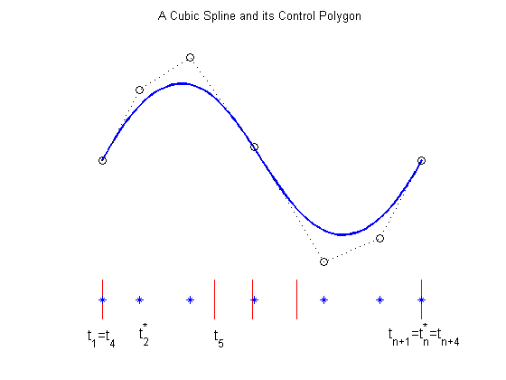
The essential parts of the B-form are the knot sequence t and the B-spline coefficient sequence a. Other parts are the number n of the B-splines or coefficients involved, the order k of its polynomial pieces, and the dimension d of its coefficients a. In particular, size(a) equals [d,n].
There is one more part, namely the basic interval, [t(1) .. t(end)]. It is used as the default interval when plotting the function. Also, a spline is taken to be continuous from the right everywhere except at the right endpoint of the basic interval, where it is taken to be continuous from the left. This is illustrated in the example below, for a spline created using spmak.
b = 0:3; sp = spmak(augknt(b,3),[-1,0,1,0,-1]); x = linspace(-1,4,51); plot(x,fnval(sp,x),'x') hold on axis([-2 5,-1.5,1]) tx = repmat(b,3,1); ty = repmat(.5*[1;-1;NaN],1,length(b)); plot(tx(:),ty(:),'-r') legend({'Spline Values' 'Knots'}) hold off title({'A Spline in B-form is Right(Left)-Continuous ';... 'at Left(Right) Endpoint of its Basic Interval'})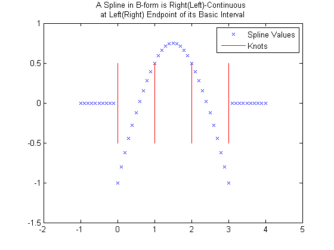
fnbrk can be used to obtain any or all parts of a B-form. For example, here is the output provided by fnbrk for the B-form of the spline shown above.
fnbrk(sp)
The input describes a B- form
knots(1:n+k)
0 0 0 1 2 3 3 3
coefficients(d,n)
-1 0 1 0 -1
number n of coefficients
5
order k
3
dimension d of target
1
However, there is usually no need to know any of these parts. Rather, you use commands like spapi or spaps to construct the B-form of a spline from some data, then use commands like fnval, fnplt, fnder, etc., to make use of the spline constructed, without any need to look at its various parts.
The following sections give more detailed information about the B-splines, in particular about the important role played by knot multiplicity.
Knot Multiplicity
Here, for k = 2, 3, and 4, are B-splines of order k, and below them their first and second (piecewise) derivatives, to illustrate some facts about B-splines. Try out the bpspligui tool if you want to experiment with examples of your own.
cl = ['g','r','b','k','k']; v = 5.4; d1 = 2.5; d2 = 0; s1 = 1; s2 = .5; t1 = [0 .8 2]; t2 = [3 4.4 5 6]; t3 = [7 7.9 9.2 10 11]; tt = [t1 t2 t3]; ext = tt([1 end])+[-.5 .5]; plot(ext([1 2]),[v v],cl(5)) hold on plot(ext([1 2]),[d1 d1],cl(5)) plot(ext([1 2]),[d2 d2],cl(5)) ts = [tt;tt;NaN(size(tt))]; ty = repmat(.2*[-1;0;NaN],size(tt)); plot(ts(:),ty(:)+v,cl(5)) plot(ts(:),ty(:)+d1,cl(5)) plot(ts(:),ty(:)+d2,cl(5)) b1 = spmak(t1,1); p1 = [t1;0 1 0]; db1 = fnder(b1); p11 = fnplt(db1,'j'); p12 = fnplt(fnder(db1)); lw = 2; plot(p1(1,:),p1(2,:)+v,cl(2),'LineWidth',lw) plot(p11(1,:),s1*p11(2,:)+d1,cl(2),'LineWidth',lw) plot(p12(1,:),s2*p12(2,:)+d2,cl(2),'LineWidth',lw) b1 = spmak(t2,1); p1 = fnplt(b1); db1 = fnder(b1); p11 = [t2;fnval(db1,t2)]; p12 = fnplt(fnder(db1),'j'); plot(p1(1,:),p1(2,:)+v,cl(3),'LineWidth',lw) plot(p11(1,:),s1*p11(2,:)+d1,cl(3),'LineWidth',lw) plot(p12(1,:),s2*p12(2,:)+d2,cl(3),'LineWidth',lw) b1 = spmak(t3,1); p1 = fnplt(b1); db1 = fnder(b1); p11 = fnplt(db1); p12=[t3;fnval(fnder(db1),t3)]; plot(p1(1,:),p1(2,:)+v,cl(4),'LineWidth',lw) plot(p11(1,:),s1*p11(2,:)+d1,cl(4),'LineWidth',lw) plot(p12(1,:),s2*p12(2,:)+d2,cl(4),'LineWidth',lw) tey = v+1.5; text(t1(2)-.5,tey,'linear','FontSize',12,'Color',cl(2)) text(t2(2)-.8,tey,'quadratic','FontSize',12,'Color',cl(3)) text(t3(3)-.5,tey,'cubic','FontSize',12,'Color',cl(4)) text(-2,v,'B','FontSize',12) text(-2,d1,'DB','FontSize',12) text(-2,d2,'D^2B','FontSize',12) axis([-1 12 -2 7.5]) title({'B-splines of Various Orders With Simple Knots';... ' and Their First and Second Derivative '}) axis off hold off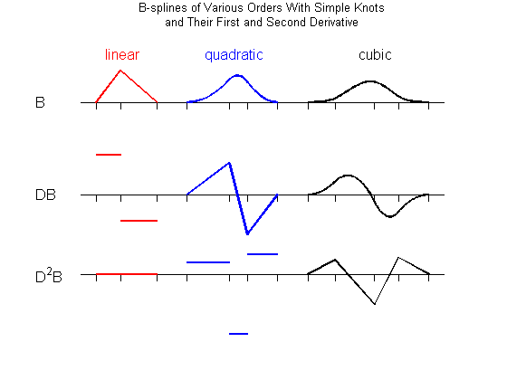
1. The B-spline B_{j,k} = B( . | t_j, ..., t_{j+k}) is a pp of order k with breaks at t_j, ..., t_{j+k} (and nowhere else). Actually, its nontrivial polynomial pieces are all of exact degree k-1.
For example, the rightmost B-spline above involves 5 knots, hence is of order 4, i.e., a cubic B-spline. Correspondingly, its second derivative is piecewise linear.
2. B_{j,k} is positive on the interval (t_j .. t_{j+k}) and is zero off that interval. It also vanishes at the endpoints of that interval, unless the endpoint is a knot of multiplicity k (see the rightmost example in the next figure).
3. Knot multiplicity determines the smoothness with which the two adjacent polynomials join across that knot. In shorthand, the rule is:
knot multiplicity + number of smoothness conditions = order
To illustrate this last point, the figure below shows four cubic B-splines and, below them, their first two derivatives. Each spline has a certain knot of multiplicity 1, 2, 3, 4, as indicated by the lengths of the knot lines.
d2 = -1; t1 = [7 7.9 9.2 10 11]-7; t2 = [7 7.9 7.9 9 10]-2; t3 = [7 7.9 7.9 7.9 9]+2; t4 = [7 7.9 7.9 7.9 7.9]+5; [m,tt] = knt2mlt([t1 t2 t3 t4]); ext = tt([1 end])+[-.5 .5]; plot(ext,[v v],cl(5)) hold on plot(ext,[d1 d1],cl(5)) plot(ext,[d2 d2],cl(5)) ts = [tt;tt;NaN(size(tt))]; ty = .2*[-m-1;zeros(size(m));m]; plot(ts(:),ty(:)+v,cl(5)) plot(ts(:),ty(:)+d1,cl(5)) plot(ts(:),ty(:)+d2,cl(5)) b1 = spmak(t1,1); p1 = fnplt(b1); db1 = fnder(b1); p11 = fnplt(db1); p12 = [t1;fnval(fnder(db1),t1)]; plot(p1(1,:),p1(2,:)+v,cl(1),'LineWidth',lw) plot(p11(1,:),s1*p11(2,:)+d1,cl(1),'LineWidth',lw) plot(p12(1,:),s2*p12(2,:)+d2,cl(1),'LineWidth',lw) text(-2,v,'B'), text(-2,d1,'DB'), text(-2,d2,'D^2B') b1 = spmak(t2,1); p1 = fnplt(b1); db1 = fnder(b1); p11 = fnplt(db1); p12 = fnplt(fnder(db1),'j'); plot(p1(1,:),p1(2,:)+v,cl(2),'LineWidth',lw) plot(p11(1,:),s1*p11(2,:)+d1,cl(2),'LineWidth',lw) plot(p12(1,:),s2*s2*p12(2,:)+d2,cl(2),'LineWidth',lw) b1 = spmak(t3,1); p1 = fnplt(b1); db1 = fnder(b1); p11 = fnplt(db1,'j'); p12 = fnplt(fnder(db1),'j'); plot(p1(1,:),p1(2,:)+v,cl(3),'LineWidth',lw) plot(p11(1,:),s1*s2*p11(2,:)+d1,cl(3),'LineWidth',lw) plot(p12(1,:),s2*s2*p12(2,:)+d2,cl(3),'LineWidth',lw) b1 = spmak(t4,1); p1 = fnplt(b1); db1 = fnder(b1); p11 = fnplt(db1); p12 = fnplt(fnder(db1)); plot(p1(1,:),p1(2,:)+v,cl(4),'LineWidth',lw) plot(p11(1,:),s2*p11(2,:)+d1,cl(4),'LineWidth',lw) plot(p12(1,:),s2*s2*p12(2,:)+d2,cl(4),'LineWidth',lw) text(t2(2)-.5,tey,'2-fold','FontSize',12,'Color',cl(2)) text(t3(2)-.8,tey,'3-fold','FontSize',12,'Color',cl(3)) text(t4(3)-.8,tey,'4-fold','FontSize',12,'Color',cl(4)) axis([-1 14 -3 7.5]) title('Cubic B-splines With A Knot of Various Multiplicities') axis off hold off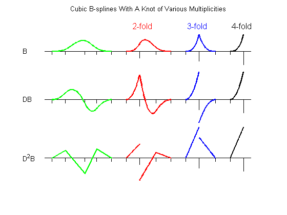
For example, since the order of a cubic B-spline is 4, a double knot means just 2 smoothness conditions, i.e., just continuity across that knot of the function and its first derivative.
Refinement and Knot Insertion
Any B-form can be refined, i.e., converted, by knot insertion, into the B-form for the same function, but for a finer knot sequence. The finer the knot sequence, the closer is the control polygon to the function being represented.
For example, this figure shows the original (in black) and refined (in red) control polygons for the cubic spline used earlier.
sp = savesp; fnplt(sp,2.5); hold on c = fnbrk(sp,'c'); plot(aveknt(fnbrk(sp,'k'),4),c,':ok'); b = knt2brk(fnbrk(sp,'k')); spref = fnrfn(sp,(b(2:end)+b(1:end-1))/2); cr = fnbrk(spref,'c'); h2 = plot(aveknt(fnbrk(spref,'knots'),4),cr,':*r'); axis([-.72 7 -.5 3.5]) title('A Spline, its Control Polygon, and a Refined Control Polygon') axis off hold off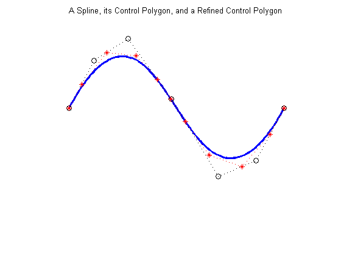
As a second example, we start with the vertices of the standard diamond as our control points, but run through the sequence twice.
ozmz = [1 0 -1 0]; c = [ozmz ozmz 1; 0 ozmz ozmz]; circle = spmak(-4:8,c); fnplt(circle) hold on plot(c(1,:),c(2,:),':ok') axis(1.1*[-1 1 -1 1]) axis equal, axis off hold off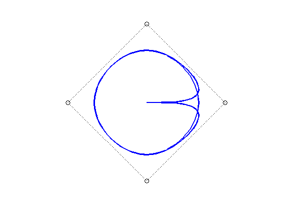
However, when we plot the resulting spline, we get a curve that begins and ends at the origin, due to the fact that we chose to make the knot sequence simple. Hence our spline vanishes at the endpoints of its basic interval, [-4 .. 8]. We really only want the part of the spline that corresponds to the interval [0 .. 4], plotted more boldly in the figure below.
fnplt(circle) hold on fnplt(circle,[0 4],4) plot(c(1,:),c(2,:),':ok') axis(1.1*[-1 1 -1 1]) title('A Circle as Part of a Spline Curve with a Diamond as Control Polygon') axis equal, axis off hold off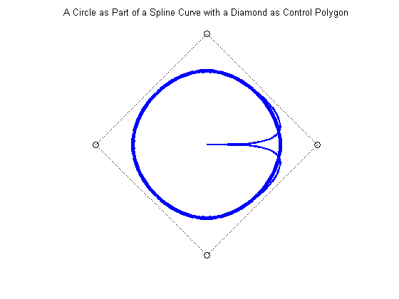
To get just the circle, we restrict our spline to the interval [0 .. 4]. We do this by converting to ppform, restricting to [0 .. 4], then converting to B-form.
circ = fn2fm(fnbrk(fn2fm(circle,'pp'),[0 4]),'B-'); fnplt(circ,2.5) hold on cc = fnbrk(circ,'c'); plot(cc(1,:),cc(2,:),':ok') axis(1.1*[-1 1 -1 1]) axis equal, axis off hold off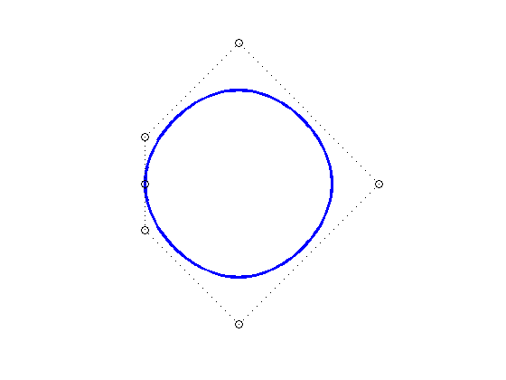
Refinement of the resulting knot sequence leads to a control polygon much closer to the circle.
ccc = fnbrk(fnrfn(circ,.5:4),'c'); hold on plot(ccc(1,:),ccc(2,:),'-r*') title('A Circle as a Spline Curve, its Control Polygon, and a Refinement') hold off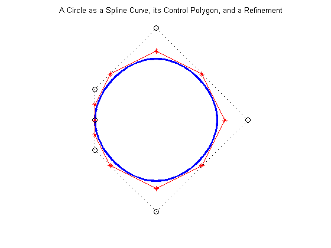
Multivariate Splines
A spline in Curve Fitting Toolbox can also be multivariate, namely, the tensor product of univariate splines. The B-form for such a function is only slightly more complicated, with the knots now a cell array containing the various univariate knot sequences, and the coefficient array suitably multidimensional.
For example, this random spline surface is cubic in the first variable (there are 11 knots and 7 coefficients in that variable), but only piecewise constant in the second variable ((2+5+2)-8 = 1).
fnplt( spmak({augknt(0:4,4),augknt(0:4,3)}, rand(7,8)) )
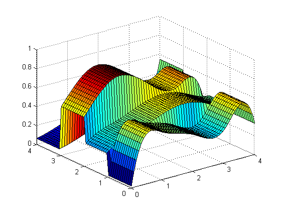